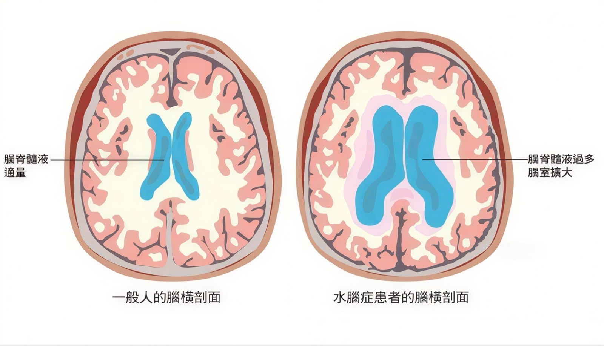

LONG-TERM CARE · DISABILITY
長照／失能，不是只有醫療費。
真正沉重的，常常是出院之後的照顧時間、照護人力、安養環境、耗材設備，以及家人被迫停下來照顧的生活成本。這不是恐嚇，而是把照顧成本講清楚。
疾病或意外
→
生活功能下降
→
需要照顧
→
長期支出
→
理賠啟動
本檔為案例解讀與保險教育用途；實際理賠依保單條款、醫療文件與保險公司核定。
SOCIAL CONTEXT · TAIWAN
院內醫療有保障，出院照顧不一定有。
01社會保險不足健保處理醫療本身，但看護、安養、耗材與家屬時間成本常要自己面對。長看險投保率僅 4.32%。
02高齡化65 歲以上人口已達 18.35%；活得久，也代表照顧期可能拉長到數年甚至十年以上。
03照護人力短缺全台約 83 萬人需要長期看護；有人願意照顧，也不代表有人力可以找。
04少子化台灣少子化速度全球之冠，照顧責任更容易集中在一兩個家人身上。
資料來源：衛福部高齡及長期照顧統計、1966 長照服務統計；本頁為衛教與保險教育用途。
MONTHLY COST · REALITY
長照最可怕的，是每個月都要花。
不是一次性的醫療費，而是長期、每個月固定出現的現金流壓力。以下都是真實會累積的支出。
CARE 照護人力
看護費用外籍看護 約 26,000／月
本國籍看護 約 72,000／月
家屬自顧＝薪水與時間損失FACILITY 安養環境
機構費用日照中心 19,500–36,000
養護中心 30,000–50,000
護理之家 40,000–55,000MEDICAL 醫療往返
醫療復健65 歲以上平均醫藥 76,377
平均住院 11.7 天
門診、復健、交通會累積SUPPLIES 設備耗材
耗材設備輪椅 5,800–250,000
氣墊床 8,000–320,000
紙尿布 約 3,000／月
每月 5 萬 × 10 年就是 600 萬，這還沒把醫療突發支出完全算進去——下一頁可以自己試算。
QUICK ESTIMATE · INTERACTIVE
一起快速試算：照顧十年，大概要準備多少？
照顧 10 年，建議總準備
NT$ 0
這不是精算表，而是讓你先有感：長照是一段時間內、每月都要花。
每月基本支出NT$ 0
每年支出NT$ 0
試算公式：每月支出 × 12 × 年期 ＋ 每年醫療復健交通 × 年期 ＋ 一次性設備費。數字用來建立概念，實際費用依照護程度、地區、機構與家庭選擇而不同。
TWO CLAIM PATHS
長照險和失能險，不是同一把尺。
長照險看「生活能不能自理」；失能險看「身體功能缺損落在哪一級」。先分清楚兩條啟動路徑，後面的理賠金額才會看得懂。
長照險
看生活功能
不問疾病名稱，重點是日常生活是否已經需要他人協助。
- 巴氏量表：六個生活動作中，三項以上需他人協助。
- CDR 量表：認知退化達中度失智以上，也可能符合長照狀態。
- 給付重點：通常是定期給付，回應每月照顧成本。
或
失能險（失能扶助險）
看失能等級表
依身體器官或功能缺損程度，對照 1–11 級與給付比例。
- 判定標準：看「失能程度與保險金給付表」，不是看巴氏分數。
- 一次金：依失能等級比例乘上保額。
- 扶助金：通常較嚴重等級才啟動月月給付。
一句話記：長照險看生活照顧需求；失能險看失能等級與給付比例。本檔三個案例主要走「失能等級表」這條路。
BARTHEL ADL · 6 取 3
巴氏量表判定標準：長照只看 6 取 3。
巴氏量表原本可以評估多項日常生活功能；但長照險常見的啟動判定，重點不是把所有分數加總，而是看六項基本生活動作中，有沒有三項以上需要他人協助。
長照理賠申請
只看六項，符合三項就很關鍵
以下六項稱為 ADL（日常生活活動）。若經醫師或專業評估，其中三項以上無法自行完成，可能符合長期照顧狀態。
1進食
2移位
3如廁
4沐浴
5平地移動
6更衣
不必加總各項分數長照險看的是「符合幾項生活功能障礙」，不是把十項巴氏量表分數加起來比較高低。
容易混淆的版本
外勞申請常看十項分數
外籍看護申請、照護需求評估或其他制度，可能會使用更完整的十項巴氏量表分數。這和長照險 6 取 3 的判定邏輯不同。
1進食
2移位
3如廁
4沐浴
5平地移動
6更衣
7個人衛生
8上下樓梯
9大便控制
10小便控制
判定焦點生活功能是否已經需要他人協助。
啟動門檻六項 ADL 中符合三項以上。
文件依據仍須依醫師診斷、評估紀錄與保單條款核定。
本頁用來釐清長照險常見判定邏輯；實際認定仍依保單條款、醫療文件與保險公司核定。
CDR · COGNITIVE FUNCTION
什麼是 CDR 量表？它看的是認知功能。
CDR 是臨床失智評估量表，用來觀察記憶、方向感、判斷力與日常生活能力的退化程度。長照險除了 ADL 6 取 3，也常把「認知功能退化」列為另一條啟動路徑。
CDR 六個觀察面向
不是只看記憶力，而是看整體生活能力
記憶力
定向感
解決問題能力
社區活動能力
家居嗜好
自我照料
長照險常見認知功能門檻
CDR ≥ 2
若評估達 CDR 2 分，也就是中度失智以上，即使不是身體動作失能，也可能因認知功能退化而符合長照狀態。
一句話記：ADL 是看「身體生活功能」，CDR 是看「認知生活功能」。兩者都是長照險可能使用的啟動依據。
CDR 判定需由專業醫療評估；本頁為保險教育用途，實際理賠依條款與保險公司核定。
DISABILITY TABLE · 1–11 級
失能等級表，決定理賠比例。
失能險不是用巴氏量表判定，而是依「失能程度與保險金給付表」。表裡把失能分成 1–11 級，等級越前面代表越嚴重，給付比例也越高。
看部位與功能神經、眼耳口、四肢、臟器等功能缺損，都可能列入評估。
看失能等級1 級最嚴重、11 級較輕；每個等級有對應給付比例。
看給付項目一次金通常依比例給付；月月金多與較重等級相關。
← 1 級最嚴重（給付 100%）11 級最輕（給付 5%）→
大腸癌第一次符合 7 級失能，比例 40%，理賠 402,410 元。
大腸癌第二次病程惡化加重至 3 級失能，比例 80%，再次理賠 402,850 元。
水腦症完全失能生活完全需他人協助，啟動一次金與月月金，合計 1,839,297 元。
失能等級依「失能程度與保險金給付表」與醫師診斷認定；實際給付項目與比例依保單條款核定。
CASE OVERVIEW · 3 CASES
三個案例，看失能保障如何啟動。
不是老了才會失能。腦中風、癌症惡化、腦部疾病，都可能讓生活功能下降到需要他人長期協助——而失能保障，正是在這個時候啟動。
真正關鍵不是病名，而是生活功能改變後，家庭要面對的長期照顧成本。
01腦中風併偏癱生活功能突然下降，一次金 100 萬＋月月金
02大腸癌後移轉疾病惡化再啟動，兩階段合計 80.5 萬
03水腦症完全失能病程延伸到完全失能，合計 183.9 萬
本檔為案例解讀與保險教育用途；實際理賠依保單條款、醫療文件與保險公司核定。
DISEASE COURSE · TIMELINE
不是單次手術，而是一路延伸的病程。
水腦症是腦脊髓液過多、使腦室擴大、壓迫腦部。這個案例從引流到放射手術、再到完全失能，是「疾病也可能讓生活完全需要他人協助」的代表。
109/08腦室腹腔引流術水腦症，接受右側腦室腹腔引流術，住院 6 天。
109/10馬刀立體定位放射手術松果體腫瘤併水腦，接受馬刀放射手術。
109/11→再次住院、完全失能疑似自體免疫性腦炎，病程延伸到完全失能。

左為一般腦部、右為水腦症：腦脊髓液過多使腦室擴大、壓迫腦部。
示意圖為衛教用途；實際病況與失能程度以醫師診斷與評估為準。
CLAIM TAKEAWAYS
長照／失能理賠，最後都回到照顧現金流。
長照險用 ADL／CDR 看生活照顧需求；失能險用失能等級表看身體功能缺損。本檔三個案例提醒的是：一旦生活功能改變，家庭面對的通常不是一張收據，而是一段長期支出。
01不是單筆，是長期最重的常不是第一張收據，而是每月固定的照顧成本——失能月月金正是回應這點。
02先分清啟動標準長照險看 ADL／CDR；失能險看失能等級表。疾病後遺症與病程惡化，都可能讓保障再次發揮作用。
完整證據鏈診斷書 → 失能等級評估 → 理賠通知書 → 一次金＋月月金
本檔為案例解讀與保險教育用途；實際理賠依保單條款、醫療文件與保險公司核定。